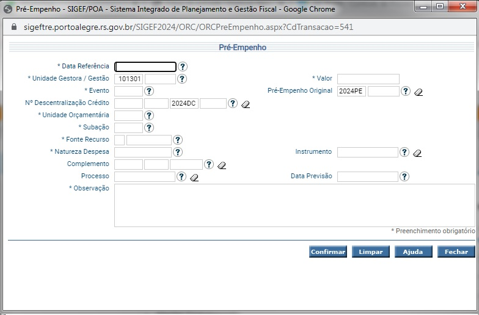

- O pré empenho é o nosso antigo PL - Pedido de liberação. Trata-se da reserva no orçamento, LOA, do recurso.
- Não Há mais a diferenciação entre PL aprovado e autorizado.
- A diretoria de licitações está desenvolvendo um sistema a ser integrado com o SIGEF para cadastramento dos contratos.
Para acessar o pré empenho você deve ir no menu EXECUÇÃO ORÇAMENTÁRIA e PRÉ-EMPENHO
Dica: Utilize os ícones de ponto de interrogação para facilitar o preenchimento.
A data em que o Pré-Empenho está sendo inserido.
A unidade de gestão do pré-empenho como a centralizada ou fundos.
É possível pesquisar por nome, clicando na aba nome e inserindo uma palavra chave. Na imagem acima foi utilizado "ambiente".
Lembrando que os fundos possuem gestão diferente da centralizada, sendo gerenciados pelo órgão de competência.
É o tipo de Pré-Empenho. Podendo ser um novo, anulação ou reforço (antigo complementar).
Campo destinado aos casos de uso compartilhado do recurso entre secretarias. Não obrigatório.
Unidade Orçamentária idêntica às utilizadas atualmente.
O antigo "projeto/atividade". Agora possui o nome Subação. Os códigos estão conforme a LOA.

O antigo Vínculo Orçamentário. Utilize os códigos antigos para facilitar a busca pelo campo "nome".

A rubrica orçamentária, conforme o plano de contas elaborado anualmente e de acordo com as normas do NBCASP.
Em construção
O número do processo SEI da demanda.
A descrição do Pré-Empenho, similar ao campo "motivo" do PL.
Trata-se do valor solicitado. O valor da despesa que será reservado no orçamento.
O número do pré-empenho original, utilizado nos casos de ser uma anulação ou reforço.
Em construção.
Data de previsão do uso do Pré-Empenho. Relevante para reservar o recurso correspondente a cada exercício.